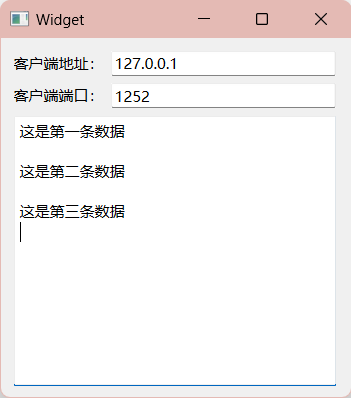

[7] QT-TCP编程（一）基本了解¶
1. 客户端¶
以下是使用Qt编写的基本TCP客户端的流程：
-
包含必要的头文件：首先，在你的Qt应用程序中包含必要的头文件，以便能够使用TCP相关的类和函数。通常，你需要包含QtNetwork模块的头文件。
2. 创建QTcpSocket对象：创建一个QTcpSocket对象，它将用于与服务器建立连接和进行数据通信。 3. 连接到服务器：使用connectToHost方法连接到服务器。指定服务器的IP地址和端口号。例如：
4. 处理连接成功信号：连接成功后，可以使用连接的信号和槽机制来处理连接成功事件。 5. 处理数据接收：使用readyRead信号来检测是否有数据可供接收，并使用相应的槽函数来处理接收到的数据。6. 发送数据到服务器：使用connect(socket, &QTcpSocket::readyRead, [=](){ QByteArray data = socket->readAll(); qDebug() << "Received data: " << data; });write方法将数据发送到服务器。 7. 关闭连接：当不再需要与服务器通信时，可以关闭连接。 8. 处理错误和异常：确保处理连接过程中可能出现的错误和异常情况，以提高应用程序的健壮性。
这是一个简单的TCP客户端的基本流程示例。你可以根据你的应用程序需求扩展和优化这个基本框架。请注意，Qt的信号和槽机制是用于异步处理事件的强大工具，可以帮助你更有效地管理与服务器的通信。
2. 服务器¶
在Qt中实现一个基本的TCP服务器的流程如下：
-
包含必要的头文件：首先，在你的Qt应用程序中包含必要的头文件，以便能够使用TCP服务器相关的类和函数。通常，你需要包含QtNetwork模块的头文件。
2. 创建QTcpServer对象：创建一个QTcpServer对象，它将用于监听客户端连接请求并处理连接。 3. 监听连接：使用listen方法开始监听指定的IP地址和端口号，等待客户端连接。if (!server->listen(QHostAddress::Any, 端口号)) { qDebug() << "Server could not start. Error: " << server->errorString(); } else { qDebug() << "Server listening on port " << 端口号; }请替换
端口号为你想要使用的端口号。 4. 处理新连接：使用newConnection信号连接一个槽函数，以便在新客户端连接时进行处理。connect(server, &QTcpServer::newConnection, [=](){ QTcpSocket *clientSocket = server->nextPendingConnection(); // 在这里可以与客户端进行数据通信 });在上述示例中，当有新的客户端连接时，将创建一个新的
QTcpSocket对象（clientSocket）来处理该客户端的数据通信。 5. 与客户端通信：使用QTcpSocket对象与连接的客户端进行数据通信。你可以使用write方法向客户端发送数据，使用readyRead信号来处理接收到的数据。6. 关闭连接：当与客户端的通信结束时，可以使用connect(clientSocket, &QTcpSocket::readyRead, [=](){ QByteArray data = clientSocket->readAll(); qDebug() << "Received data from client: " << data; }); QByteArray dataToSend = "Hello, Client!"; clientSocket->write(dataToSend);close方法关闭连接。 7. 处理错误和异常：确保处理可能出现的连接和通信过程中的错误和异常情况，以提高服务器的健壮性。
这是一个简单的TCP服务器的基本流程示例。你可以根据你的应用程序需求扩展和优化这个基本框架，例如，可以考虑如何处理多个客户端连接、线程安全性等问题。请注意，Qt的信号和槽机制是用于异步处理事件的强大工具，可以帮助你更有效地管理与客户端的通信。
3.示例¶
1. 客户端¶

#include "widget.h"
#include "ui_widget.h"
Widget::Widget(QWidget *parent)
: QWidget(parent)
, ui(new Ui::Widget)
{
ui->setupUi(this);
this->setWindowTitle("客户端");
//实例化
socket = new QTcpSocket;
//读取
connect(socket,&QTcpSocket::readyRead,this,&Widget::ReadSlot);
}
Widget::~Widget()
{
delete ui;
}
//处理数据
void Widget::ReadSlot()
{
QByteArray data = socket->readAll();
ui->textEdit->append(data + "\n");
}
void Widget::on_connectButton_clicked()
{
QString IP = ui->IPLineEdit->text();
QString Port = ui->PortLineEdit->text();
socket->connectToHost(QHostAddress(IP),Port.toShort());
connect(socket,&QTcpSocket::connected,[this]()
{
QMessageBox::information(this,"连接提示","服务器连接成功");
});
connect(socket,&QTcpSocket::disconnected,[this]()
{
QMessageBox::warning(this,"连接提示","服务器连接断开");
});
}
void Widget::on_pushButton_2_clicked()
{
this->close();
}
void Widget::on_sendButton_clicked()
{
QString sendDate = ui->sendLineEdit->text();
socket->write(sendDate.toUtf8());
}
解析：
-
ReadSlot() 函数：当QTcpSocket 接收到数据时，这个槽函数会被触发，它将接收到的数据显示在textEdit 控件中。 -
on_connectButton_clicked() 函数：这个函数处理用户点击连接按钮的事件。它从用户输入的 IP 地址和端口号创建一个连接到服务器的QTcpSocket 连接。连接成功和断开连接时，会显示消息框提示用户。 -
on_pushButton_2_clicked() 函数：当用户点击关闭按钮时，这个函数关闭客户端应用程序。 -
on_sendButton_clicked() 函数：这个函数处理用户点击发送按钮的事件。它从sendLineEdit 控件获取用户输入的文本，并将文本以 UTF-8 编码发送到服务器
2. 服务器¶

#include "widget.h"
#include "ui_widget.h"
Widget::Widget(QWidget *parent)
: QWidget(parent)
, ui(new Ui::Widget)
{
ui->setupUi(this);
server = new QTcpServer;
server->listen(QHostAddress::AnyIPv4,PORT);
connect(server,&QTcpServer::newConnection,this,&Widget::newconnect);
}
Widget::~Widget()
{
delete ui;
}
void Widget::newconnect()
{
//建立TCP连接
QTcpSocket *socket = server->nextPendingConnection();
//获取客户端地址
socket->peerAddress();
socket->peerPort();
ui->IPLineEdit->setText(socket->peerAddress().toString());
ui->PortLineEdit->setText(QString::number(socket->peerPort()));
//接受客户端信息并返回接受的信息
connect(socket, &QTcpSocket::readyRead, [=](){
QByteArray data = socket->readAll();
ui->textEdit->append(data + "\n");
socket->write(data);
});
}
解析：
-
server->listen(QHostAddress::AnyIPv4, PORT);：这一行代码启动了TCP服务器并开始监听指定的IP地址（QHostAddress::AnyIPv4表示监听所有可用的IPv4地址）和端口号（PORT是你的端口号变量）以接受客户端连接请求。 -
connect(server, &QTcpServer::newConnection, this, &Widget::newconnect);：当有新的客户端连接请求时，将调用newconnect 槽函数来处理新连接。 -
newconnect() 函数：这个函数被调用以处理新连接。它首先使用server->nextPendingConnection() 获取与客户端的连接，并获取客户端的IP地址和端口号。 -
connect(socket, &QTcpSocket::readyRead, [=]() { ... });：这个代码段连接了客户端的readyRead 信号，以便在客户端发送数据时进行处理。当数据准备好时，它会读取客户端发送的数据，然后追加到textEdit 控件中并发送回客户端。